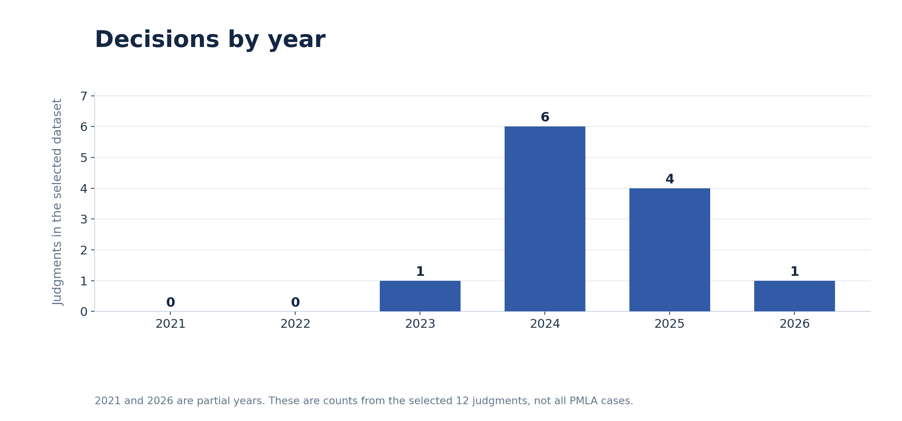
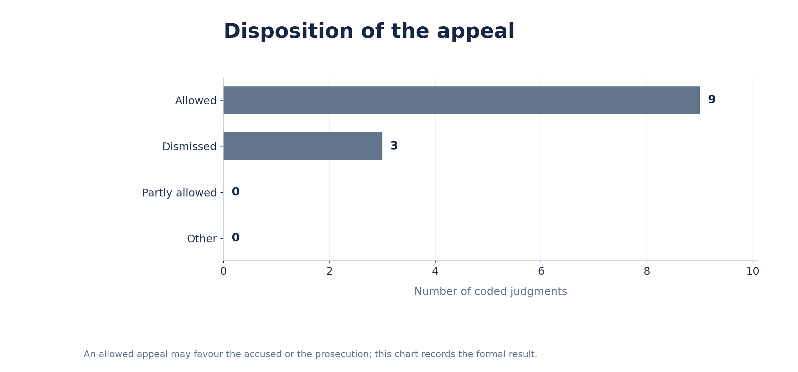
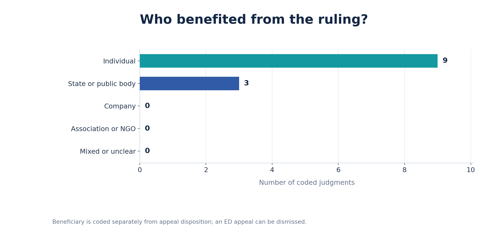

Temporal concentration. Six of the twelve coded decisions occurred in 2024. The selected 2021 and 2022 counts are zero; this does not establish that no such decisions exist.
A judgment-level exploration of PMLA bail, trial delay, and constitutional liberty. Twelve selected, reasoned decisions, three charts, and an inspectable official-source-linked dataset.
These charts count judgments, not individual accused persons, applications, or separate appeals disposed of in a common judgment.

Temporal concentration. Six of the twelve coded decisions occurred in 2024. The selected 2021 and 2022 counts are zero; this does not establish that no such decisions exist.

Formal result. An allowed appeal may favour either the accused or the prosecution, depending on who appealed.

Practical beneficiary. This separate code avoids equating an allowed appeal with bail granted to a person.
Scope note: This is a deliberately selected corpus of 12 reasoned judgments, not an exhaustive census of all Supreme Court PMLA bail decisions between 1 September 2021 and 31 August 2026. Conclusions describe this corpus only.
The cases reveal several coexisting routes to or restrictions on liberty, rather than a uniformly pro- or anti-bail trend.
Manish Sisodia (2023) and Satyendar Kumar Jain refused bail on their records, while recognising that unreasonable pretrial delay may change the liberty analysis. The decisions do not make serious allegations an automatic answer to Article 21.
Tarsem Lal explained why appearance on summons and an appearance bond do not themselves require bail (paras 15, 21–25); Kalvakuntla Kavitha addressed Section 45's proviso for women; Prem Prakash considered statements and whether the prima facie material met Section 45 (paras 32–45).
Subhash Sharma held that failure to produce the arrested person within the constitutionally required period vitiated custody; the Section 45 twin test could not save that arrest (paras 6–10). In contrast, Kanhaiya Prasad required the High Court to evaluate Section 45 when granting ordinary bail.
Manish Sisodia (2024), V. Senthil Balaji, Udhaw Singh, Mahesh Joshi and Arvind Dham show how long custody, witness lists, seized records and actual trial progress may engage Article 21. Mahesh Joshi discusses this balance in paras 13–16; Arvind Dham in paras 15–23.
Search case names, provisions, issues, holdings or precedents. Open the source column to inspect the judgment on the Supreme Court's own website.
Showing 12 judgments
| Case and citation | Decision | Disposition | Beneficiary | Core issue and holding | Official PDF |
|---|
The selection rule and coding conventions matter as much as the numerical totals.
ChatGPT was used for initial research support, suggested coding, legal-detail cross-checks, chart creation and site/README drafting. Official Supreme Court PDFs, rather than headnotes, are the recorded primary sources. The 'Coded by' field retains the team members named in the submitted workbook.
The selected-case approach limits generalisations: the charts do not estimate the Court's overall bail grant rate or represent all eligible decisions. Read the judgment linked beside each case for its full facts, reasoning and final directions.